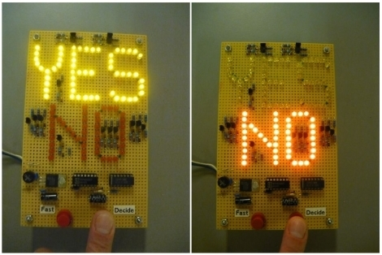
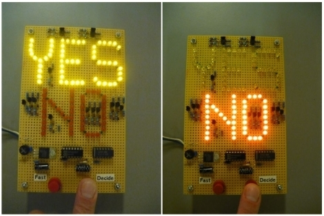

Background
When I first began studying neuroscience, I was very interested in the idea of memory, and specifically how it degenerates in Alzheimer's Disease. That interest has never gone away. First, I was a NSF-Fellow studying biomarkers for Alzheimer's at the Yassa Lab and most recently I studied decision-making at MIT's Hamilos Lab. All this drove me to ask the question, how can we best interface with the brain to best 1) understand memory and 2) cure neurodegenerative disease?
A lofty goal, I began as an intern at Nia Therapeutics: a Brain-Computer Interface (BCI) company developing a therapeutic for memory loss. Now, in PS70, I want to ask the question: how can I build a simplistic design that gives us a look into the brain?
Idea #1 : Reading Your Mind

 

My inspiration for this project is the House-Tennis Test , where a patient in a vegetative state can communicate by answering questions through either thinking of a house or playing tennis - because these activate different parts of the brain, the interviewer can get a yes or no answer.
My idea is to use some sort of accessible EEG to read brain waves. This could be a commercial device, or homemade electrodes to place on a scalp and a EEG amplifier. Then: 1) the interviewer will ask a question (such as, do you like ice cream?). 2) The user will either be asked to solve a math problem if the answer is yes (Beta waves indicate focus and will be read by the EEG), or relax if the answer is no (Alpha waves indicate relaxation and will be read by the EEG). 3) This will then trigger a small circuit where a dial points to "Yes" or "No" depending on the user's brain wave characterization. I know this is a big project to accomplish! My alternative ideas around the same topic include either a device to record memories and the LEDs fade overtime on memories you do not practice, OR a lamp that response to heartrate to hypothetically show someone's mood.
Idea #2: Gamma Waves for Cognitive Decline


My inspiration for this project is Cognito Therapeutics , where a patient is exposed to Gamma waves in the form of auditory and visual cues, that can help restore neural oscillations lost in Alzheimer's Disease.
The device would be composed of visual and auditory cues. The visual cues could be in the form of sunglasses or glasses with leds that oscillate at the Gamma Wave hz (40 hz). The headphones can be 3D printed and sewn, connecting to a bluetooth device that plays gamma auditory waves. It would have to 1) be functional with both the headphones and glasses, and 2) comfortable as the device is supposed to be worn for one hour a day for Alzheimer's patients.